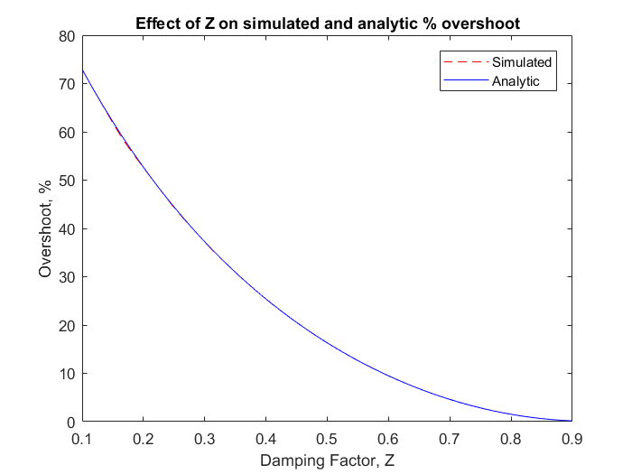

ECE 414 Homework #2 Redo
Josh Andrews
Contents
Question 1
Analyze standard second order H(s) for Wn=100 and for Z=0.1, 0.5, and 0.9. Plot the step response.
Clean everything up before we start
clear; clc;
First Set Wn to initial value of 100
Wn = 100; figure(1); clf;
Now find the transfer function of H(s) for each Z by using a while loop. Also in the while loop plot the step response for each Z, set initially to 0.1
Also store the step response info for each Z
Z = 0.1; i = 1; % index variable for stepinfo while Z <= 0.9 H=tf(Wn.^2, [1 2*Z*Wn Wn.^2]); Hinfo(i) = stepinfo(H); step(H); hold on; Z = Z + 0.4; % increment Z i = i + 1; end legend('Z = 0.1', 'Z = 0.4','Z = 0.9'); title('Step response with constant Wn and three Z cases');
Now compare the three cases using both the plot above and the step info for each of the three cases shown below
Z = 0.1
disp(Hinfo(1));
RiseTime: 0.0113
SettlingTime: 0.3837
SettlingMin: 0.4685
SettlingMax: 1.7292
Overshoot: 72.9156
Undershoot: 0
Peak: 1.7292
PeakTime: 0.0314
Z = 0.5
disp(Hinfo(2));
RiseTime: 0.0164
SettlingTime: 0.0808
SettlingMin: 0.9315
SettlingMax: 1.1629
Overshoot: 16.2929
Undershoot: 0
Peak: 1.1629
PeakTime: 0.0359
Z = 0.9
disp(Hinfo(3));
RiseTime: 0.0288
SettlingTime: 0.0470
SettlingMin: 0.9024
SettlingMax: 1.0015
Overshoot: 0.1524
Undershoot: 0
Peak: 1.0015
PeakTime: 0.0721
If Wn is held constant and Z is varied alters all of the step response parameters. Rise Time and Peak Time are both directly proportional to Z while % Overshoot, Settling Time, and the Peak are inversly proportional. The Settling Max also appeared to be inversely proportional however the min seemed to follow a more parabolic curve.
Question 2
Using the same H(s) and constant Wn = 100, let 0.1<=Z<=0.9
Z = linspace(0.1,0.9,50);
s = 0.01; % 1% settling time
Find the simulated and analytic rise time, settling time, and %overshoot
for i = 1:1:50 H=tf(Wn.^2, [1 2*Z(i)*Wn Wn.^2]); Hinfo(i) = stepinfo(H); Rtime(i) = Hinfo(i).RiseTime; %sim rise time Stime(i) = Hinfo(i).SettlingTime; % sim settling time Overshoot(i) = Hinfo(i).Overshoot; %sim overshoot Rtime_calc(i) = (2.16 * Z(i) + 0.6)/Wn; %analytic rise time Stime_calc(i) = (-1*log(s*sqrt(1-(Z(i)^2))))/(Z(i)*Wn); Overshoot_calc(i) = 100*exp((-pi*Z(i))/(sqrt(1-Z(i)^2))); end
Part A
Plot simulated and analytic rise time verses Z
figure(2);clf; plot(Z, Rtime, '--r'); hold on; plot(Z, Rtime_calc,'b'); legend('Simulated','Analytic'); xlabel('Damping Factor, Z'); ylabel('Rise Time, seconds'); title('Effect of Z on simulated and analytic rise time');
Part B
Plot simulated and analytic settling time versus Z
figure(3);clf; plot(Z, Stime, '--r'); hold on; plot(Z, Stime_calc,'b'); legend('Simulated','Analytic'); xlabel('Damping Factor, Z'); ylabel('Settling Time, seconds'); title('Effect of Z on simulated and analytic settling time');

Part C
Plot simulated and analytic overshoot versus Z
figure(4);clf; plot(Z, Overshoot, '--r'); hold on; plot(Z, Overshoot_calc,'b'); legend('Simulated','Analytic'); xlabel('Damping Factor, Z'); ylabel('Overshoot, %'); title('Effect of Z on simulated and analytic % overshoot');